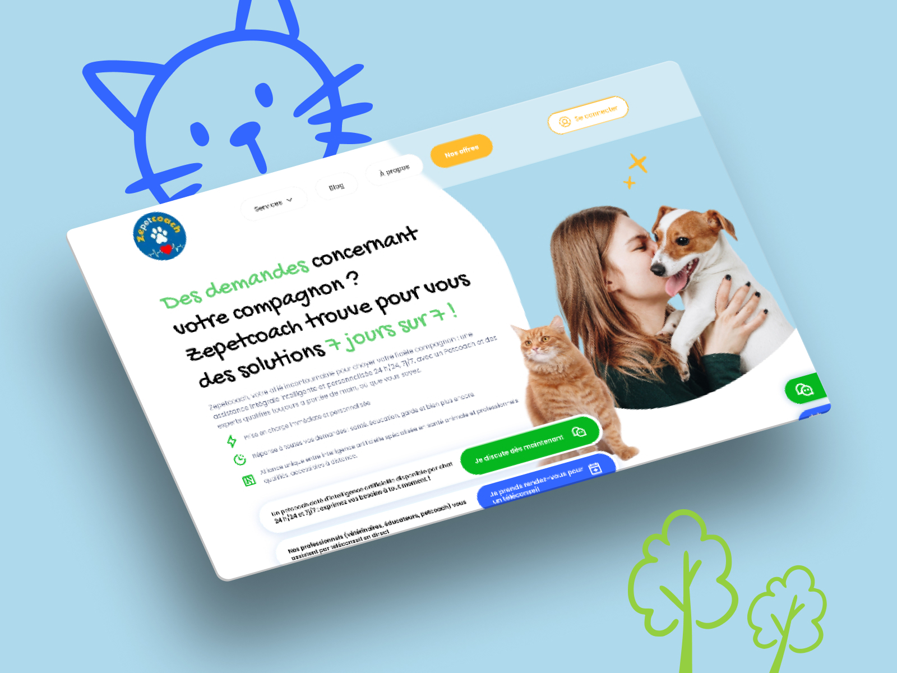
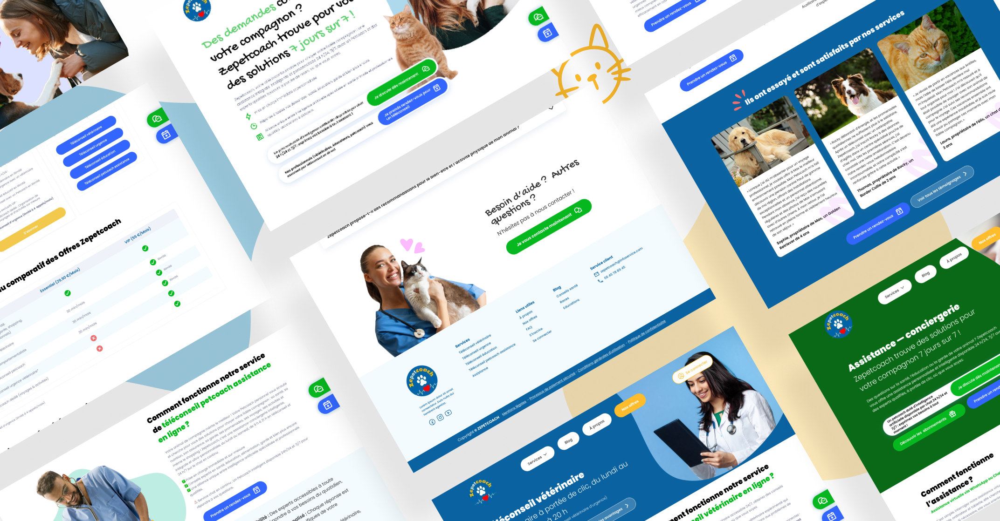

Plateforme d'assistance animale 7j/7
Concevoir le site vitrine d'une plateforme d'assistance pour animaux de compagnie combinant intelligence artificielle et réseau d'experts humains disponibles 24h/24.
Le projet
Cette plateforme est un service d'assistance intégrale pour les propriétaires d'animaux de compagnie — combinant un Petcoach IA disponible 24h/24 via chat et un réseau de professionnels qualifiés (vétérinaires, éducateurs canins, ostéopathes, toiletteurs) accessibles en téléconseil. Le site devait présenter cette double proposition de valeur clairement, et convertir le visiteur vers l'une des offres d'abonnement.
→ Rendre immédiatement compréhensible la complémentarité des deux services
→ Deux formules (Essentiel / VIP) + accès téléconseil à la demande
→ Mettre en avant l'équipe de professionnels diplômés et certifiés

Une identité graphique simple et colorée —
Quatre piliers, une expérience fluide
La plateforme couvre quatre grandes catégories de besoins pour les propriétaires d'animaux. L'enjeu UX était de structurer cette offre large sans surcharger le visiteur — chaque service devant être compréhensible en quelques secondes.
Vétérinaire
Téléconseils fiables par des experts diplômés : maladies, symptômes, nutrition, médicaments, avis et urgences.
Éducation
Éducateurs canins et félins diplômés, disponibles en téléconseil partout en France. Conseils personnalisés et exercices pratiques.
Assistance
Un Petcoach personnel répond à tous les besoins : santé, voyages, hygiène, garde, activités, achats et plus encore.
Urgences
Un vétérinaire diplômé évalue l'urgence en visio, confirme la gravité et guide vers les structures adaptées 24h/24.
Trois portes d'entrée, un parcours sans friction
La page d'offres devait permettre au visiteur de choisir son niveau d'engagement en un coup d'œil — de l'abonnement mensuel à la session ponctuelle. La hiérarchie visuelle guidait naturellement vers l'offre la plus complète sans forcer la main.
Essentiel
Accès au Petcoach IA 24h/24, téléconseils inclus, blog santé et éducation avec plus de 1000 articles.
VIP
Offre all-in-one avec téléconseils illimités, accès prioritaire aux experts et suivi personnalisé.
Téléconseil
Services assurés par des professionnels diplômés, formés et certifiés : vétérinaires, éducateurs, Petcoach, toiletteurs.
Tout doit être clair et compréhensible au premier coup d'œil, les offres doivent être transparentes en listant intelligemment tout ce qu'elles ont à offrir sans perdre l'utilisateur.
Un site pensé pour convaincre et convertir
Du hero d'accueil aux pages de service, en passant par la section équipe et le blog intégré — l'ensemble du site a été designé pour instaurer la confiance et guider le visiteur vers la prise de décision.
Disponible pour de nouveaux projets